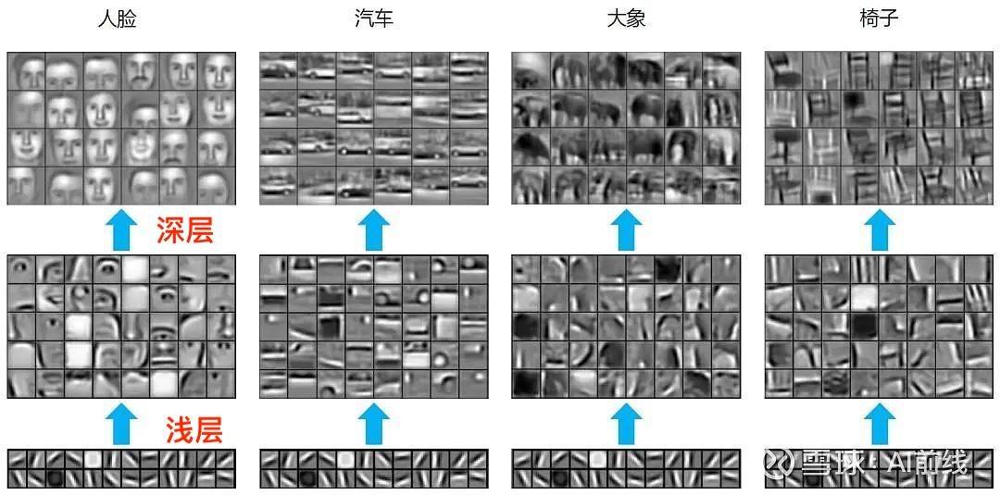
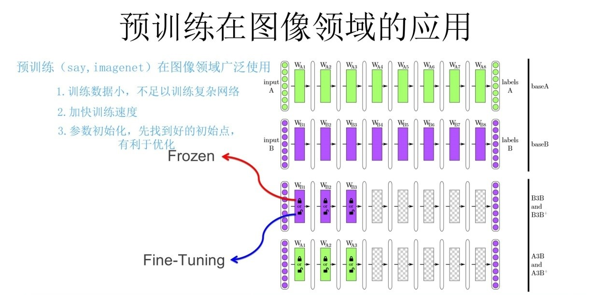

预训练
大致思想：通过一个已经训练好的模型A，去完成一个小数据量的任务B（使用模型A的浅层参数）
使用模型A的浅层参数去训练任务B得到模型B，方法：1.微调（一种迁移学习技术），2.冻结
eg：模型A用于分类猫和狗，任务B区分鸭和鹅（任务A和任务B要极其相似才可以使用）
图像领域的预训练
卷积神经网络（CNN），一般用于图片分类任务，CNN由多个层级构成，每层学习到的特征不一样，越浅层学到的特征越通用（横竖撇捺），越深层学到的特征与具体任务的关联性越强（人脸-人脸轮廓，汽车-汽车轮廓）

如果我们要做一个图像分类任务：猫狗图片各十张，设计一个深度神经网络区分猫狗图片。对于这个任务设计一个深度神经网络是不可能的，因为深度学习在训练阶段需要大量的数据，当前图片数量过少。
但可以利用网上现有的大量已经做好分类标注的图片，比如Imagenet中有大量图片，我们利用其中数据训练出一个模型A，然后对模型A做一定的改进得到模型B，有两种改进方法：
1.冻结（frozen）：浅层参数使用模型A的参数，高层参数随机初始化，浅层参数一直不变，然后将各十张猫狗照片训练参数
2.微调（fune-tuning）（常用）：浅层参数使用模型A的参数，高层参数随机化，然后将各十张猫狗照片训练参数，这里浅层参数会随着任务的训练不断发生变化

第一行和第二行都是从头训练，第三行是用B的参数进行冻结预训练，第四行是用A的参数进行微调预训练
语言模型
通俗说语言模型就是计算一个句子的概率，即对于语言序列$ w_1,w_2,...,w_n $，语言模型就是计算该序列的概率，即$ P(w_1,w_2,…w_n) $。($ w_i表示一个词 $)
通过两个实例来了解上述意思：
1.假设给定两句话”判断这个词的磁性”和”判断这个词的磁性”,语言模型会认为后者更自然，转化为数学语言即：
2.假设给定一句话做填空 “判断这个词的____”，则问题就变成了给定前面的词，找出后面的一个词是什么，转化为数学语言就是：
由两个实例给出语言模型更加具体描述：给定一个由各词组成的句子，计算这个句子的概率，或者根据上文计算下一个词的概率
语言模型的两个分支：统计语言模型和神经网络语言模型
统计语言模型
统计语言模型的基本思想是计算条件概率
给定一个由各词组成的句子，计算这个句子的概率的公式如下（条件概率乘法公式推广）：
可以由”判断这个词的词性”这句话，得到：
当给定前面词的序列 “判断，这个，词，的” 时，想要知道下一个词是什么，可以直接计算如下概率：
其中，$ w_{next} \in V$表示词序列的下一个词，$ V$是一个具有$ |V|$个词的词典。对于公式（1），可以展开成如下形式
在公式2中，将字典$ V $中的所有单词，逐一作为$ w_{next} $，带入计算，最后取最大概率的词作为$ w_{next}$的候选词。
如果$ |V|$特别大，公式（2）的计算将会非常困难，但是我们可以引入马尔科夫链的概念